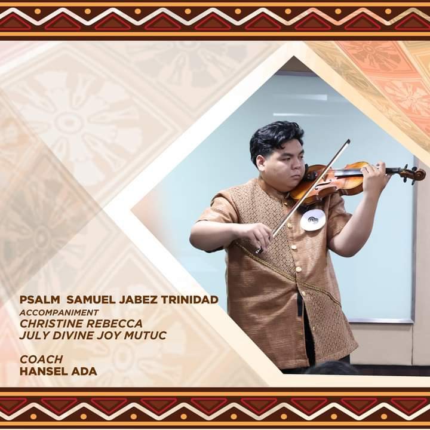

EVENTS

CAASUC Culture and Arts Festival 2024
Congratulations to the delegation of the President Ramon Magsaysay State University for achieving an outstanding feat as the the 1st Runner-Up in the recently-concluded CAASUC Culture and the Arts Festival 2024 held at Bulacan State University, City of Malolos, Bulacan from November 26-29, 2024. Your hard work, creativity, and ingenuity have brought immense pride and honor to the PRMSU community. This remarkable achievement reflects not only your individual and collective excellence but also the University's commitment to the promotion of culture and the arts.
üéôÔ∏èTawag ng Tanghalan The School Showdown!
Ang palaban sa kantahan ng Department of CCIT ng Ramon Magsaysay State University-Marry

Trinidad Captures First Gold for PRMSU
Psalm Samuel Jabez Trinidad of the President Ramon Magsaysay State University (PRMSU) finally got his gold medal after three attempts in the instrumental violin competition held during the Culture and Arts Festival 2024, held in Malolos, Bulacan, on November 27.
From the College of Computer and Information Technology (CCIT), Trinidad perfomed ‘Cavatina,‘ a song by the legendary musician Nicanor Abelardo.
He won gold two years after acquiring the silver medal in the 2022 and 2023 CAASUC 3 Festivals.

Cluster 3 Breaks Through at PRMSU 2nd President's Cup 2024
Cluster 3, a powerhouse combination of College of Industrial Technology and College of Communication and Information Technology, made an impressive mark at the recently concluded PRMSU President’s Cups, securing 17 Gold, 17 Silver, and 12 Bronze medals.
They clinched 1st place among 10 clusters, while Cluster 1 took the overall championship, and Cluster 2 secured 2nd.
The event, held from November 11-13, celebrated the exceptional talent and unwavering dedication of Ramonians, showcasing their strength and skill across different sports.

CCIT Bags Two Plaques and IT Specialist Certification
IBA, Zambales — CCIT students bag two plaques of recognition and an IT Specialist Certification at the recent Regional Assembly on Information Technology Education held at Angeles University Foundation, Angeles City Pampanga, last November 4.
With the theme "Navigating the AI-driven Future: Education, Ethics, and Innovation", different state universities and colleges from Central Luzon gather together to compete in various IT-related competitions.
PRMSU-CCIT students Mark Anthony Licud, Angelica Aquino, Daisy Ann Magno, Earl Domingo, and Krizia Mae Funiestas, under the mentorship of Mr. Fiel M. Dullas Jr., bag the 2nd runner up for Video Editing (Same Day Edit) competition.
Furthermore, MLBB team SOS composed of Christian Jerick Paje, Lawrence Morete, Joshua Bajar, Romel Tisoy, Jerome Lee Misoles, and Ralph Lebios Alibong, coached by Mr. John April N. Marpa, won the 2nd runner up for Mobile Legends Competition.
Moreover, Allen Joy Bueza with the guidance of her coach Ms. Rowela Gongora, successfully passed the IT Specialist for Artificial Intelligence Examination in the ITS Challenge, earning an Information Technology Specialist Certification.
PRMSU-CCIT also participated in the Dance Battle, iThink Hackathon, Quiz Bee, and Lanyard Design competition.
RAITE 2024
The Regional Assembly on Information Technology Education (RAITE 2024) organized by Philippine Society of Information Technology Educators (PSITE)- Central Luzon held last November 4,2024 at Angeles University Foundation Sports and Cultural Center, Angeles City, Pampanga was a SUCESS.PSITE - Central Luzon would like to express their gratitude to all the attendees, sponsors, guests, coordinators, commitee, members and officers who brought their energy, insights, and support. Also, this success will not be possible without the support of the host institutions; Bulacan State University and Angeles University Foundation. Thank you for the unwavering support. Together, we learned, connected, and built something truly special. This was more than just an event—it was a space to inspire, empower, and pave the way for exciting new ideas and partnerships.
FINAL RESULTS:SOS CLAIMS VICTORYüèÜ
After an epic battle, SOS emerges as the ultimate champion of the CCIT Mobile Legends Tournament.They will now represent PRMSU CCIT at the upcoming RAITE 2024 on October 24, to be held at the Sports and Cultural Center (SCC) of Angeles University Foundation in Angeles City, Pampanga. Get ready for them to take on the E-Games: Mobile Legends Bang Bang category!
UPCOMING EVENTS
Techno Fest 2025
Experience the exhilarating excitement of fierce competition, showcase your skills and talents, create new bonds and memories with your peers, and have fun as you learn exciting new things technology has to offer.